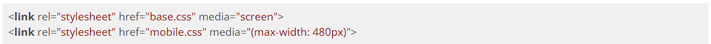
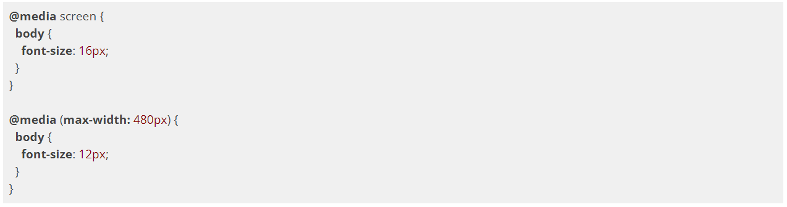

Para que suportemos usuários móveis, antes de tudo, precisamos tomar uma decisão: fazer um site exclusivo - e diferente - focado em dispositivos móveis ou adaptar nosso site para funcionar em qualquer dispositivo?
Vários sites na internet adotam a estratégia de ter um site diferente voltado para dispositivos móveis usando um subdomínio diferente como "m." ou "mobile.", como https://m.kabum.com.br.
Essa abordagem é a que traz maior facilidade na hora de pensar nas capacidades de cada plataforma, Desktop e mobile, permitindo que entreguemos uma experiência customizada e otimizada para cada situação. Porém, há diversos problemas envolvidos:
Como atender adequadamente diversos dispositivos tão diferentes quanto um smartphone com tela pequena e um tablet com tela mediana? E se ainda considerarmos as SmartTVs, ChromeCast, AppleTV? Teríamos que montar um site específico para cada tipo de plataforma?
Uma abordagem que costumas ser muito utilizada é a de ter um único site, acessível em todos os dispositivos móveis. Adeptos da ideia da Web única (One Web) consideram que o melhor para o usuário é ter o mesmo site do Desktop normal também acessível no mundo móvel. É o melhor para o desenvolvedor também, que não precisará manter vários sites diferentes. E é o que garante a compatibilidade com a maior gama de aparelhos diferentes.

CSS media types
Desde a época do CSS2, há uma preocupação com o suporte de regras de layout diferentes para cada situação possível. Isso é feito usando os chamados media types, que podem ser declarados ao se invocar um arquivo CSS:

Outra forma de declarar os media types é separar as regras dentro do próprio arquivo CSS:

O media type screen determina a visualização normal, na tela do Desktop. É muito comum também termos um CSS com media type print com regras de impressão (por exemplo, retirar navegação, formatar cores para serem mais adequadas para leitura em papel etc).
CSS3 media queries
Todos os smartphones e navegadores modernos suportam uma nova forma de adaptar o CSS baseado nas propriedades dos dispositivos, as media queries do CSS3.
Em vez de simplesmente falar que determinado CSS é para handheld em geral, nós podemos agora indicar que determinadas regras do CSS devem ser vinculadas a propriedades do dispositivo como tamanho da tela, orientação (landscape ou portrait) e até resolução em dpi.

Outra forma de declarar os media types é separar as regras dentro do mesmo arquivo CSS:

Repare como o atributo media agora pode receber expressões complexas. No caso, estamos indicando que queremos que as telas com largura máxima de 480px tenham uma fonte de 12px.
Viewport
Mas, se você tentar rodar nosso exemplo anterior em um iPhone ou Android de verdade, verá que ainda estamos vendo a versão Desktop da página. A regra do max-width parece ser ignorada!
Na verdade, a questão é que os smartphones modernos têm telas grandes e resoluções altas, justamente para nos permitir ver sites complexos feitos para Desktop. A tela de um iPhone SE por exemplo é 1280px por 720px. Celulares Android já chegam a 4K.
Ainda assim, a experiência desses celulares é bem diferente dos Desktops. 4K em uma tela de 4 polegadas é bem diferente de 4K em um notebook de 16 polegadas. A resolução muda. Celulares costumam ter uma resolução em dpi bem maior que Desktops.
Como arrumar nossa página?
A Apple criou então uma solução que depois foi copiada pelos outros smartphones, que é configurar o valor que julgarmos mais adequado para o viewport:
Isso faz com que a tela seja considerada com largura de 370px, fazendo com que nosso layout mobile finalmente funcione e nossas media queries também.
Melhor ainda, podemos colocar o viewport com o valor
device-width definido pelo fabricante, dando mais flexibilidade com dispositivos diferentes com tamanhos diferentes:
Responsive Web Design
Pequenas mudanças que fazemos usando
@media tentando fazer a experiência do usuário em diversos dispositivos mais atraente é o que o mercado chama de Web Design Responsivo. O termo surgiu num famoso artigo de Ethan Marcotte e diz o seguinte:
São 3 os elementos de um design responsivo:
layout fluído usando medidas flexíveis, como porcentagens;
media queries para ajustes de design;
uso de imagens flexíveis.
A ideia do responsivo é que a página se adapte a diferentes condições, em especial a diferentes resoluções. E, embora o uso de porcentagens exista há décadas na Web, foi a popularização das media queries que permitiram layouts verdadeiramente adaptativos.
Mobile-first
Nossos exercícios seguiram o processo que chamamos de desktop-first. Isso significa que tínhamos nossa página montada para o layout Desktop e, num segundo momento, precisaremos codar a adaptação a mobile.
Na prática, isso não é muito interessante porque precisamos desfazer algumas coisas do que tínhamos feito no nosso layout para desktop: tiramos alguns posicionamentos e desfizemos diversos ajustes na largura de elementos que já eram padrões deles.
É muito mais comum e recomendado o uso da prática inversa: o Mobile-first. Isto é, começar o desenvolvimento pelo mobile e, depois, adicionar suporte a layouts desktop. No código, não há nenhum segredo: vamos apenas usar mais media queries min-width ao invés de max-width, mais comum em códigos desktop-first.
A grande mudança do mobile-first é que ela permite uma abordagem muito mais simples e evolutiva. Inicia-se o desenvolvimento pela área mais simples e limitada, com mais restrições, o mobile. O uso da tela pequena vai nos forçar a criar páginas mais simples, focadas e objetivas. Depois, a adaptação pra Desktop com media queries, é apenas uma questão de readaptar o layout.